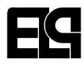

Communication d'un festival porté par MMI.
Contexte
Une identité pensée pour être vue vite
L'enjeu était de créer un système graphique simple, énergique et mémorable, capable de donner une vraie présence à un festival étudiant sans l'alourdir.
Conception de l'identité, hiérarchie visuelle et déclinaisons.
Affiche principale, signature graphique et motifs de diffusion.

Une pièce d'appel directe, conçue pour donner le ton en un regard.
Direction
Faire festival sans ajouter de bruit
Le travail s'est concentré sur la lisibilité, le rythme et la capacité du visuel à rester fort quand il change d'échelle ou de support.
- Créer un impact immédiat à distance.
- Garder une signature claire sur plusieurs formats.
- Assumer un ton visuel plus franc que décoratif.
Point clé
Le projet devait d'abord affirmer une ambiance et une personnalité, pas seulement “bien présenter” l'événement.
Supports
Deux éléments qui structurent l'ensemble

Direction graphique, système d'identité et adaptation des éléments clés.
Ce projet m'a appris à penser une identité comme un ensemble cohérent plutôt que comme un seul visuel fort.